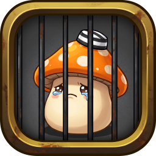

服刑日誌v0.14.5陪你練等坐牢的好幫手
尚未開始
角色--
職業--
等級--
地圖--
經驗收益
--EXP / hr
- 依最近 10 min 預估
- --
- 整場平均
- --
- 最近 10 min 累計經驗
- --
- 目前總累計經驗
- --
- 升級剩餘時間
- --
- 還差
- --
- 活躍 / 閒置
- -- / --
楓幣收益（背包要開啟）
目前 ----楓幣 / hr
- 依最近 10 min 預估
- --
- 整場平均
- --
- 最近 10 min 累計楓幣
- --
- 目前總累計楓幣
- --
- 計入時間（背包開著的時間）
- --
女神組隊任務（雅典娜禁地）
--
歷史紀錄
診斷 · 辨識來源與引擎狀態
辨識來源 · 從畫面哪裡讀到的
經驗值欄位尚未找到
等待定位…
--
等級尚未找到
等待定位…
--
職業尚未找到
等待定位…
--
角色名尚未找到
等待定位…
--
地圖名稱尚未找到
等待定位…（需展開小地圖，並等文字辨識就緒）
--
神聖祈禱尚未找到
等待定位…（祈禱 buff 要在身上）
--
楓幣尚未找到
等待定位…（需打開背包視窗）
--
放大是整數倍、不做平滑：你看到的像素就是辨識程式拿到的像素。
引擎狀態
| 畫面大小 | -- |
| 取樣 | -- |
| 文字辨識引擎 | 尚未載入 |
載入中…
載入中…
載入中…
數值、怪物圖、掉落物與出現地圖來自遊戲客戶端的資料檔（掉落物是怪物卡上列的，沒有機率）。預設只列已開放區域會出現的怪。點一列展開大圖、掉落物與出現地圖。